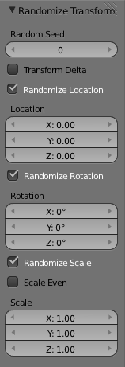

变换工具¶
随机变换¶
参考
模式: 物体模式和编辑模式
面板:
菜单: ,

随机化变换选项。
此工具允许您应用随机变换。
物体模式¶
在物体模式中，它将平移，旋转和缩放值随机化到物体或多个物体。当应用于多个物体时，每个物体获得自己的种子值，并从其他物体获得不同的变换结果。
对齐物体¶
参考
模式: 物体模式
菜单:
对齐工具用于对齐多个选定的物体，使其在指定的轴上排列。
选项¶
- 高质量
- 使用更精确的数学来更好地确定物体的位置。在正或负边界框对齐的情况下，如果一个或多个所选物体具有任何旋转变换（或Δ旋转变换），则建议检查高质量， 以便对所有三个全局轴精确计算其边界框。
- 对齐模式
该对齐模式控制将确定什么样的目标的一部分将被排列：
- 中心
- 物体中心。
- 正面/反方
- 它们各自的边界框的正面或负面（在全局轴上）。
- 相对于
在 相对于 将让我们控制选择的物体对齐：
- 活动项
- 活动物体。
- 选中项
- 选择的中心点。
- 3D 游标
- ToDo.
- 场景原点
- 全局原点。
- 对齐 X, Y, Z
- 选择要对齐所选物体的轴。